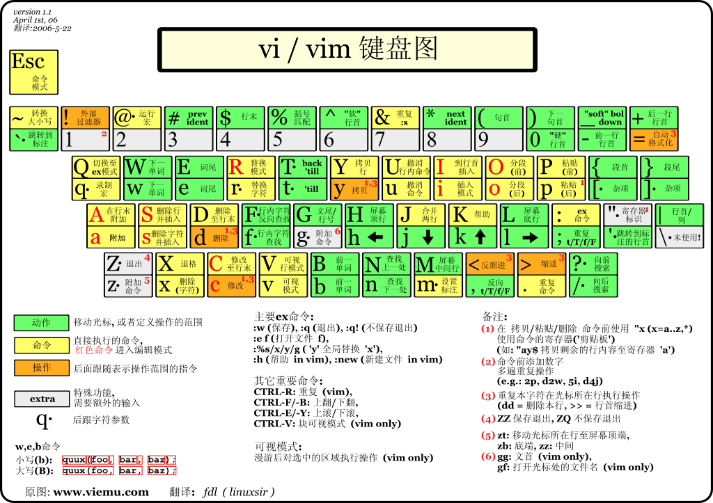

vim键位
在 vim 底行模式输入 :h key-notation 可以查看 vimdoc 的标记体例（intro.txt）。
本文包括给程式设计师的Vim入门图解说明、Vi/Vim 键盘图等 Cheat-Sheet。
*key-notation* *key-codes* *keycodes*
These names for keys are used in the documentation. They can also be used
with the ":map" command (insert the key name by pressing CTRL-K and then the
key you want the name for).
notation meaning equivalent decimal value(s)
-----------------------------------------------------------------------
<Nul> zero CTRL-@ 0 (stored as 10) *<Nul>*
<BS> backspace CTRL-H 8 *backspace*
<Tab> tab CTRL-I 9 *tab* *Tab*
*linefeed*
<NL> linefeed CTRL-J 10 (used for <Nul>)
<FF> formfeed CTRL-L 12 *formfeed*
<CR> carriage return CTRL-M 13 *carriage-return*
<Return> same as <CR> *<Return>*
<Enter> same as <CR> *<Enter>*
<Esc> escape CTRL-[ 27 *escape* *<Esc>*
<Up> cursor-up *cursor-up* *cursor_up*
<Down> cursor-down *cursor-down* *cursor_down*
<Left> cursor-left *cursor-left* *cursor_left*
<Right> cursor-right *cursor-right* *cursor_right*
<S-...> shift-key *shift* *<S-*
<C-...> control-key *control* *ctrl* *<C-*
<M-...> alt-key or meta-key *meta* *alt* *<M-*
<A-...> same as <M-...> *<A-*
在 vim 帮助 txt 文档中，以
*标注的为索引关键字，例如右上角的*key-notation*、*key-codes*、*keycodes*，以及*<Return>*、*<Enter>*、*<Esc>*、*cursor-up*、*shift* *、*control*、*meta*。
输入 :h h、:h j、:h k、:h l 分别查看常规模式下 h/j/k/l 单按键的作用，定位到光标移动所在说明文档 motion.txt 中。
CTRL-W_w（同时按下 Ctrl 和 w，再按下 w）可简写标记为<C-w>w（bash manual page 中也惯用此类 emacs 风格标记组合快捷键）。
但是只能通过输入 :h CTRL-W_w（等价于 :h CTRL-W_CTRL-W）来查看该命令的帮助说明（windows.txt），而无法通过 :h <C-w>w 来查看帮助。
另外 :h CTRL-R 可查看 normal 模式下的组合键帮助说明（undo.txt）；而通过 :h c_CTRL-R（等效 :h c_<C-R>）则查看的是 commandline 模式下的组合键帮助说明。
Cheat-Sheet#
Vim cheatsheet
Vim Commands Cheat Sheet
VIM QUICK REFERENCE CARD
Vim Cheat Sheet
Vim Cheat Sheet
A Great Vim Cheat Sheet
给程式设计师的Vim入门图解说明#


Graphical vi-vim Cheat Sheet and Tutorial
Vi/Vim 键盘图#

